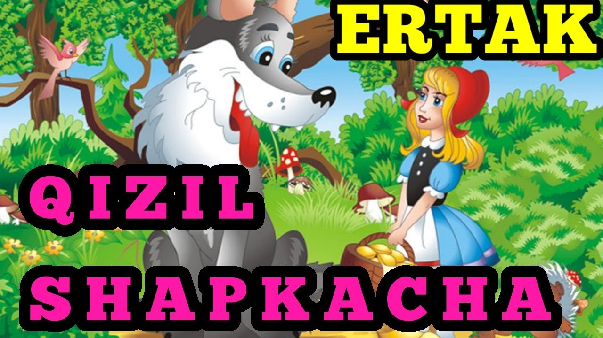

Bor ekan, yo'q ekan, bir qishloqda jajjigina bir qizcha bor ekan. U,
dunyoda tengi yo'q, juda yoqimtoy ekan. Buvisi unga tug'ilgan kuni
sharafiga bitta qizil shapkacha sovg'a qilibdi. Qizcha qayoqqa borsa,
shu chiroyli, yangi qizil shapkachasini kiyib borar ekan.
Qo'ni-qo'shnilar uni ko'rganda: "Ana, qizil Shapkacha kelyapti!" — der
ekanlar. Bir kuni oyisi somsa pishirib, qiziga:
— Oppoq qizim, qizil Shapkacha, mana bu somsa bilan kuvachadagi yog'ni buvingga oborib bergin, eson-omonligini bilib kelgin, — debdi. Qizil Shapkacha buvisini ko'rgani narigi qishloqqa ketibdi. U o'rmondan chiroyli gullar terib, sekin-asta ketayotsa, oldidan och Bo'ri chiqib qolibdi.
— Qizil Shapkacha, qayoqqa ketyapsan? — debdi Bo'ri. — Buvimni ko'rgani ketyapman, buvimga mana bu somsalar bilan kuvachada yog' olib boryapman. — Buvingning uyi uzoqdami? — deb so'rabdi Bo'ri. — Ha, uzoqda, — deb javob beribdi qizil Shapkacha. — Huv anavi tegirmon orqasidagi qishloqda. Eng chekkadagi uyni ko'ryapsanmi? O'sha. — Yaxshi, — debdi Bo'ri.
— Oppoq qizim, qizil Shapkacha, mana bu somsa bilan kuvachadagi yog'ni buvingga oborib bergin, eson-omonligini bilib kelgin, — debdi. Qizil Shapkacha buvisini ko'rgani narigi qishloqqa ketibdi. U o'rmondan chiroyli gullar terib, sekin-asta ketayotsa, oldidan och Bo'ri chiqib qolibdi.
— Qizil Shapkacha, qayoqqa ketyapsan? — debdi Bo'ri. — Buvimni ko'rgani ketyapman, buvimga mana bu somsalar bilan kuvachada yog' olib boryapman. — Buvingning uyi uzoqdami? — deb so'rabdi Bo'ri. — Ha, uzoqda, — deb javob beribdi qizil Shapkacha. — Huv anavi tegirmon orqasidagi qishloqda. Eng chekkadagi uyni ko'ryapsanmi? O'sha. — Yaxshi, — debdi Bo'ri.
Audio variantini tinglash
Sahifa 3
Asosiy betga qaytish
Biz bilan bog'lanish 📞